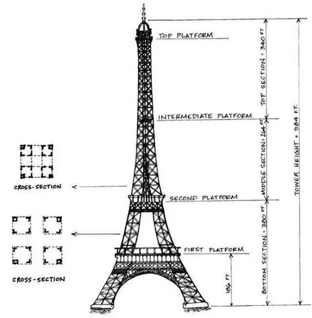
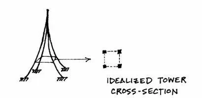
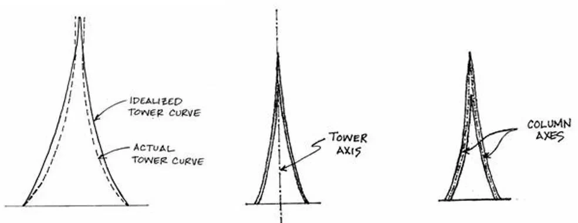
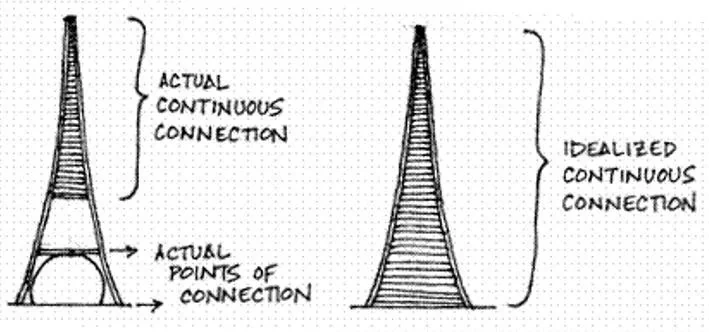
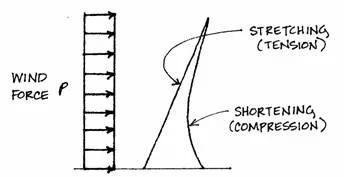

大连交通大学 · 智能建造23
我的原作埃菲尔铁塔的力学设计原理分析——基于《材料力学》与《结构设计原理》
孙宇逊
智能交建23 孙宇逊
（1）表达力学问题
核心意义
埃菲尔铁塔作为超高层桁架结构的经典案例，其设计需解决竖向荷载（自重+活荷载）、水平荷载（风荷载+地震作用） 下的强度、刚度与稳定性问题，是结构力学中“构件协同工作抵抗复合荷载”的具象化体现，对现代高耸结构（如通信塔、桥梁塔柱）设计具有标杆意义。
影响因素
• 荷载因素：竖向荷载由结构自重和游客重量构成，水平荷载以风荷载为主（巴黎地区常年风速影响结构侧向变形）；
• 材料因素：采用熟铁作为主要材料，需平衡材料强度与塑性，避免脆性破坏；
• 结构因素：构件截面尺寸、桁架节点连接方式、整体锥度设计直接影响抗侧刚度与稳定性。
发展趋势
从埃菲尔铁塔的“纯桁架结构”到现代高耸结构的“钢混组合结构”“智能化减震结构”，核心趋势是在满足力学性能的前提下，优化材料用量、提升抗灾能力、降低施工难度，本质是力学原理与材料技术、施工工艺的协同升级。
力学图示
铁塔的主要结构体系是在铁塔的四个角的每个角各自由一个巨大的缀条格构柱组成，这四个格构柱之间及柱肢之间通过锻铁构件两两相连，从而进一步从整体上形成一个坚固且轻巧的复合格构柱。从上图可以看到这些两两相连的复合格构柱的典型截面。这些复合格构柱单元需要进行详细的分析计算，但对整体简化分析来说，这些复合格构柱单元可简化为单个截面面积为800平方英寸的实心截面柱进行简化分析，如下图所示：

并且假定这四个简化的实心截面柱沿着铁塔的实际格构柱竖向曲线上升并在顶部附近相遇。如下所示：

不过，鉴于铁塔形态的理想化，上述差异对主体结构分析结果的影响不会很大。分析将假定弯曲元素遵循抛物线，但铁塔角柱实际弯曲程度要比简化模型曲线更陡峭，如下图所示。之所以选择这种更弯曲的形状，是因为它在抵抗风载荷方面最有效（但按照目前的假定来说并不是很均匀）。另外，简化后的平面模型的整体结构在两柱之间有一条对称轴，同时每个柱各自的中线也相应地被理想化为抛物线。

通过上述简化后，通过以塔架轴线为中心的分析可以找到整体内力。作用在柱轴线上的内力则可从整体内力中得出。两柱之间的连接将被理想化为连续的。它们实际上是在第二个平台上方连续的，但是在此点之下，它们仅在下部平台和地面之间形成连结。

水平荷载作用下的柱轴力
接下来研究由风载作用下结构整体弯矩产生的内力。来自水平风荷载的总弯矩将在一个柱中产生拉力（T），在另一柱中产生压力（C）。如下图所示

（2）生活中体现
*图示为本人暑假于巴黎拍摄
铁塔整体为四角锥形桁架结构，塔高324米，底部跨距约125米，通过“下粗上细”的外形设计分散竖向荷载、抵抗水平侧移，体现“结构形态与受力特性适配”的设计理念；桁架节点采用螺栓连接，斜杆与竖杆、横杆形成三角形单元，三角形的几何不变性确保节点传递轴力时无附加变形，避免应力集中。
（3）对照《结构设计原理》内容
1. 构件选型与受力匹配
• 桁架构件设计：铁塔所有构件均为轴心受力构件（竖杆受压、斜杆受拉/压），符合《结构设计原理》中“轴心构件需按强度、稳定双控设计”的要求——竖杆作为受压构件，通过增大截面面积（底部竖杆截面大于顶部）提升稳定承载力，避免欧拉失稳；斜杆作为受拉构件，按强度极限状态设计，充分利用熟铁的抗拉性能。
• 节点设计：节点采用刚性连接，确保各构件轴力有效传递，无相对转动，符合“桁架结构节点假定为铰节点，但实际工程中需考虑节点刚性带来的附加弯矩”的设计原则，避免节点处产生脆性破坏。
2. 结构整体稳定性设计
• 锥度设计：铁塔从底部至顶部逐渐收窄，截面惯性矩沿塔高逐渐减小，与“竖向荷载逐渐减小、水平荷载产生的弯矩顶部更大”的受力特点匹配，通过《结构设计原理》中“变截面构件稳定计算”原理，在材料用量最省的情况下满足整体稳定要求（避免整体倾覆或失稳）。
• 侧向刚度控制：桁架结构通过斜杆形成“抗侧力体系”，斜杆的轴力分解为水平分力和竖向分力，水平分力直接抵抗风荷载产生的剪力，相当于“结构内置的抗侧支撑”，与现代钢筋混凝土结构中“剪力墙、支撑框架”的抗侧原理一致。
3. 材料利用与优化设计
• 材料适配性：选用熟铁而非铸铁，因熟铁具有更好的塑性和韧性，在承受风荷载反复作用时不易产生疲劳破坏，符合《结构设计原理》中“动态荷载下构件需选用延性材料”的要求。
• 优化理念：铁塔总重约7300吨，通过桁架结构替代实心构件，利用“轴心受力构件比受弯构件材料利用率更高”的力学特性，大幅减少材料用量（若采用实心结构，重量将增加数十倍），体现“以结构形式优化实现材料高效利用”的设计思想，与钢筋混凝土结构中“受拉区配置钢筋、受压区利用混凝土强度”的优化逻辑同源。
这是一份便于网页阅读的原作视图，保留提交内容的文字、图片和基本顺序；公开页面不显示学号。